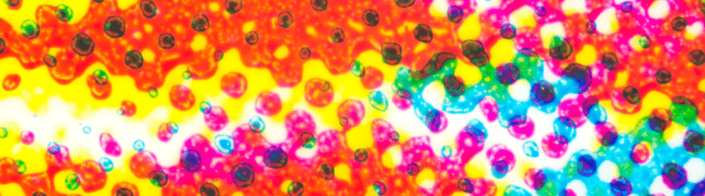

主辦機構：

執行機構：
贊助機構：
主辦機構：
執行機構：
贊助機構：
色．式．識：
灣區出發，盡顯世界色彩


Application and benefits of CTV. Application and benefits of CTV. Application and benefits of CTV.
Advanced Printing Technology Centre (APTEC), under The Hong Kong Printers Association (HKPA) initiated the application of an innovative printing colour control method - Colour Tone Value (CTV) since 2019. It has been adopted as one of the first Guangdong-Hong Kong-Macao Greater Bay Area (GBA) printing organisation standards. At the same time, it is also an ISO-recognised standard. With this method, consistent colours can be achieved in the design and print production process, and printing quality can be improved.
CTV is a printing calibration and colour control method based on the colorimetric values obtained from spectral data. CTV compensates the limitation of near neutral and density control. The key is to use colour values (LAB), instead of density, to obtain a consistent and reliable visual result, such as a result where 50% of the dots have the same colour appearance as 50% of the printed colour, and effectively monitor the dot and dot colour changes. ISO published “ISO 20654: Graphic technology — Measurement and calculation of spot colour tone value” in 2017, which is mainly used for spot colour control. Advanced Printing Technology Centre (APTEC) researched and applied it to process colour with ideal results. CTV is able to monitor both colour and tonal values, and can be applied to different printing methods, spot colour printing, 4C printing and multi-colour printing. It can bring better print performance as compared with other calibration methods.
The characterisation datasets (ICC profile) generated by using CTV methodology on two kinds of printing materials, namely CCNB (Clay Coated News Back) and white board, have been recognized by International Color Consortium (ICC) (www.color.org). Not only are they the first submission from China, but also the first globally recognized datasets for CCNB and white board.
ReCreates the World's Colour ReCreates the World's Colour ReCreates the World's Colour ReCreates the World's Colour ReCreates the World's Colour ReCreates the World's Colour